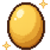
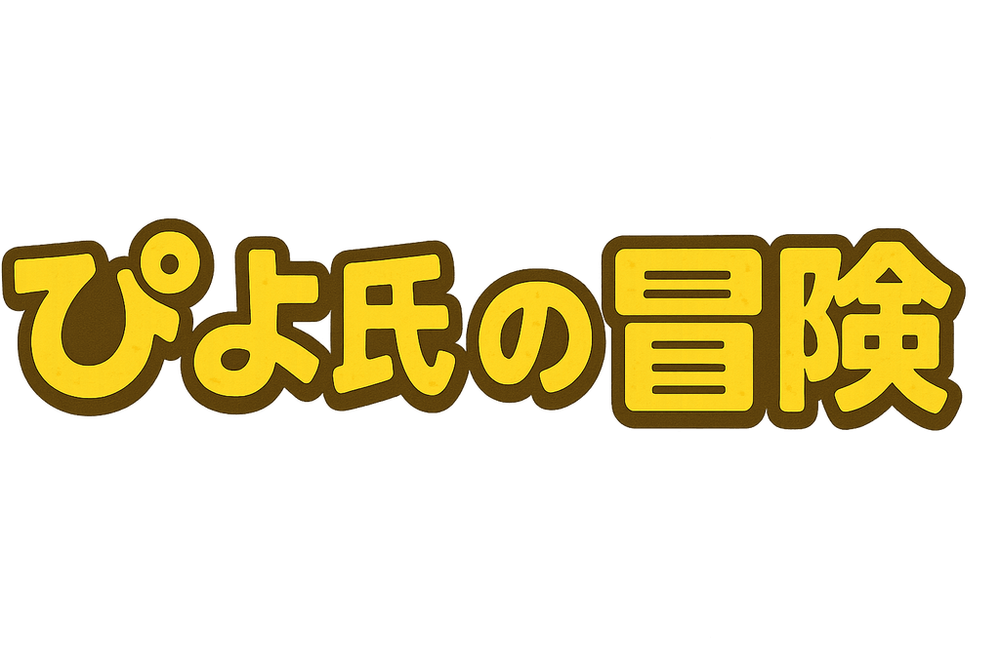

0m

0 0体撃破
レベル1 (100%)
次まで300m
注意
本作品にはゲーム内での軽い接触表現が含まれます
本作品にはゲーム内での軽い接触表現が含まれます

Created by NullPo Works
Please Tap
© 2026 ぴよ氏の冒険


Piyo's Adventure
> 画面をタップでメニュー
Ver.1.494
© 2026 ぴよ氏の冒険
Created by NullPo Works
Created by NullPo Works
メニュー
ポーズ中
画面をタップで再開
きせかえ
ランキング
通報する名前をタップ
読み込み中...
LANG
遊び方
データ引き継ぎ
広告を非表示にする
準備中
遊び方
▼ スクロール
あそびかた
◀▶
うごく
がめんの ひだり
ジャンプ
がめんの みぎ
ふむ
ジャンプで うえから
↓
おりる
ブロックで したに スワイプ
↓
どかんにはいる
どかんの うえで したに スワイプ
↑
おみせにはいる
おみせで うえに スワイプ

はい
いいえ

はい
いいえ
毎日 リセットされるよ
実績
 0円
0円
ずっと挑戦できるよ
バッジ
あつめた しょうごう
きせかえ
ずかん
GAME OVER
チュートリアル クリア！
ハイスコア！
◀▶
うごく
ジャンプ
うえから てきを ふもう！
L
R
Jump